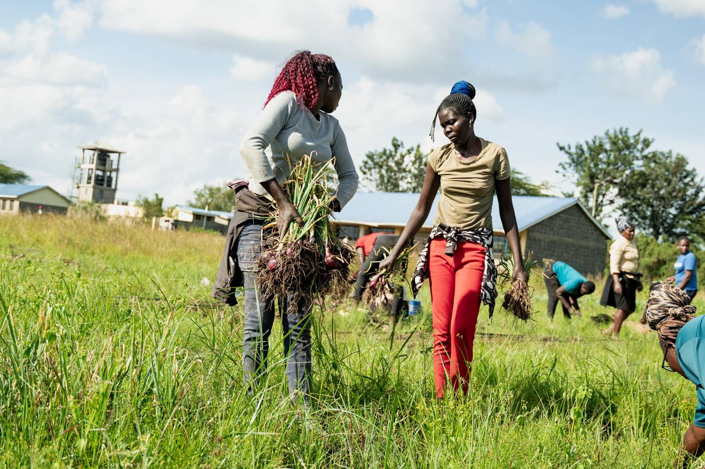

School Farm Network turns underused land at African schools into professionally managed farms that produce food, create jobs and give young people a pathway into agriculture.
Productive land helps fund or supply meals for students.
Paid local work, with emphasis on opportunities for women.
Schools gain a practical agricultural learning environment.
Ages 18 to 35 gain real operational experience and a route into agriculture.
SFN is developing and testing a repeatable model. We state what is still being measured, and never present ambition as achievement.

Photography from the original pilot.
Verify land, water, governance, access, security and commercial viability before anything is built.
Establish appropriate irrigation, storage, fencing, soil preparation and operating infrastructure.
Plan and manage crop cycles against real buyer demand and agronomic requirements.
Sell or exchange produce and deliver the agreed benefit to the school, including meals.
Record costs, jobs, yields, school benefits and lessons so the model improves and repeats.